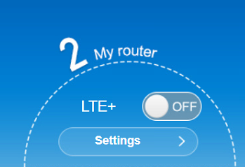
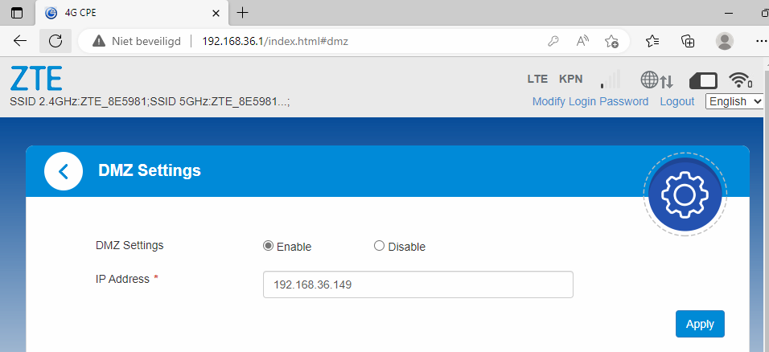
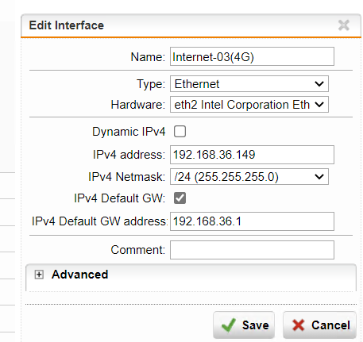
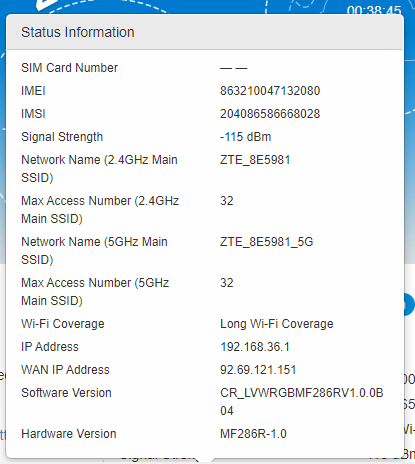
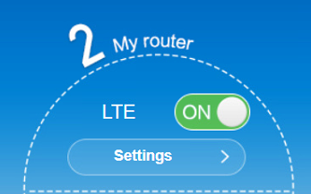

ZTE 4G modem installatie
Inleiding
Deze handleiding betreft de installatie van een ZTE-MF286R. Deze word ingezet als noodverbinding of als backup voor vestigingen.

Voorbereidingen
Er dient een simkaart opgevraagd te worden bij de fianc-afdeling van Monta.
Beschrijf hier dat het gaat om een simkaart die een vast IP-adres nodig heeft en geen belminuten.
Als deze simkaart geactiveerd is word deze handleiding in werking gezet en de gegevens van de simkaart
ingevoerd in de IP lijst die zich bevindt in "\Monta -
IT-Support - Documenten\Netwerk".
Zorg ook voor het interne adress van de vestiging. In dit voorbeeld is de IP-range 192.168.33.1/24.
Zorg voor een apparaat met UTP aansluiting of WIFI in deze handleiding word verbinding met UTP kabel behandeld.
Wachtwoord veranderen
Log via de router in op 192.168.2.1 en de standaard wachtwoord is "admin".
Je kunt het IP-nummer ook achterhalen met een Advanced IP Scanner.

Op het beginscherm van de router zie je een aantal opties. We gaan eerst het standaard wachtwoord veranderen. Dat doe je door op het beginscherm rechtsboven op modify login password te drukken.

Vul het oude wachtwoord in en genereer via Passwordstate een wachtwoord en voer deze in als het nieuwe wachtwoord.

Zet Wi-Fi uit
Nagiveer via het dashboard naar de my router selecteer onder het kopje
wifi Settings. Zet de optie Wi-Fi Switch uit.

Check via het apparaat of Wi-Fi uitstaat.
LTE Disconnecten
Om de DHCP scope aan te kunnen passen en AdvancedInternet in te stellen moet LTE+ gedisconnect worden.

DHCP Scope aanpasssen
Navigeer via het dashboard naar Advanced Settings.

Verander het IP-Adres in de correcte range.

Activeer AdvancedInternet APN.
Navigeer via het dashboard naar LTE+ Settings

Selecteer APN.

Zet het APN Modus op Manual. Voer als APN Naam advancedinternet in (naam exact overnemen). En geeft het profiel de naam: Advanced internet KPN. Zet de authenticatie op PAP (als dat niet geaccetpeerd wordt laat het dan op NONE) staan.

Klik vervolgens op "Set as Default".
DMZ instellen.
Door DMZ in te stellen wordt een Firewall achter een 4G-modem vanaf buiten benaderbaar.
Het IP-nummer wat bij DMZ ingesteld is moet het IP-nummer worden van de 4G-interface in de firewall.
Je kunt dit op 2 manieren doen.
Als de 4G-interface in de firewall op DHCP staat zet dan het DHCP-IP-nummer in het 4G-modem bij DMZ.
Je kunt er ook voor kiezen het IP-nr van de 4G-interface in de firewall een vast IP nummer te geven en dit in het 4G-modem te zetten bij DMZ.
Ga naar "Advanced Settings \ Firewall \ DMZ".
Stel daar een IP-nummer in uit de IP-reeks die zojuist is ingesteld.\

De configuratie in een Sophos firewall van de interface kan dan als volgt ingesteld worden:

De Sophos firewall is nu via het externe nummer van het 4G modem te benaderen.
Dit is te zien onder detail informatie.
In onderstaand voorbeeld dus de 92.69.121.151.

LTE Connecten
Zet de connectie weer aan.
